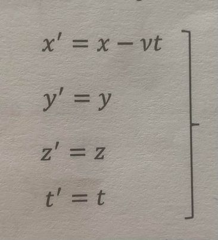

Testi A
Testi BPytja 1
1. Cilat dukuri ngelin te pandryshuara sipas parimit te Galileit gjate kalimit nga nje sistem inercial te referimit te tjetrin?
Pergigjja:
Te pandryshuara mbesin vetem dukurite mekanike.
-----------------------------------------------------------------
Pytja 2
Shprehja per transformim inverz te Lorencit eshte?
Pergigjja: b)

-----------------------------------------------------------------
Pytja 3
Te shenohen shprehjet per transformimet e Galileut:
Pergigjja:
-----------------------------------------------------------------
Pytja 4
Te shenohet postulatet e TSR:
Pergigjja:
Postulata 1: Te gjitha ligjet e fizikes mbeten te pandryshueshme ndaj qfaredo sistemi qe leviz ne menyre te njetrajtshme drejtvizore apo qe eshte ne qetesi.
Postulata 2: Shpejtesia e drites ne boshllek eshte e pandryshueshme.
-----------------------------------------------------------------
Pytja 5
Qka quhet efekti fotoelektrik?
Pergigjja:
Procesi i emetimit te elektroneve nga materialet kur ndriqohen me drite te gjatesise se caktuar valore quhet efekti i fotoelektrik
-----------------------------------------------------------------
Pytja 6
Komptoni vrejti se _________ e rrezeve _________ pas goditjes me lenden do te ________ dhe varet nga _________ i shperndarjes.
Pergigjja:
Komptoni vrejti se gjatesia valore e rrezeve renese pas goditjes me lenden do te zmadhohet dhe varet nga kendi i shperndarjes.
-----------------------------------------------------------------
Pytja 7
Te shenohet shprehja relativiste per masen?
Pergigjja:
-----------------------------------------------------------------
Pytja 8
Ku shfaqet efekti i brendshem fotoelektrik?
Pergigjja:Efekti i brendshem fotoelektrik shfaqet tek izolatoret dhe gjysmepercjellsit.
-----------------------------------------------------------------
Pytja 9
Qfare duhet bere qe rryma e fotoelektroneve te behet zero?
-----------------------------------------------------------------
Pytja 10
Te shenohen shprehjet krysore te Komptonit dhe zevendesimi i tyre per te arritur ne ate perfundimtare per nderrim te gjatesive valore.